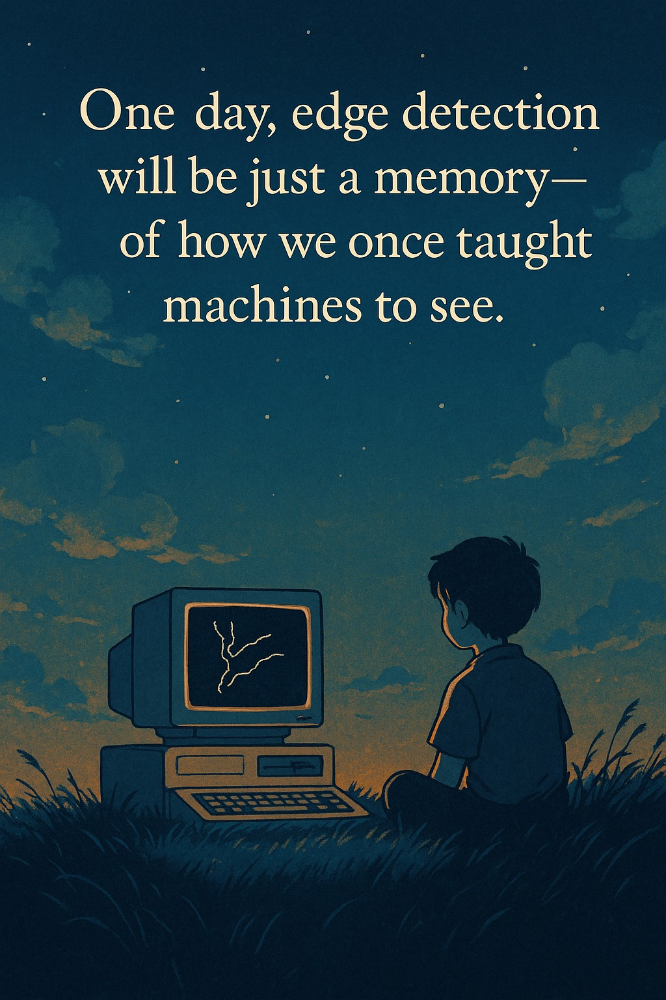

เมื่อ Deep Learning เปลี่ยน computer vision คำถามสำคัญจึงไม่ใช่ว่าจะสอนทุกอย่างเหมือนเดิมหรือไม่ แต่คืออะไรควรเก็บไว้เป็นแก่น
{kind=link}

โพสต์นี้มีน้ำหนักมากเพราะมันไม่ได้พูดแค่ว่าเทคนิคใหม่เก่งกว่าเทคนิคเก่า แต่กำลังสะท้อนความรู้สึกของคนที่เคยสอน image processing แบบคลาสสิกอย่างจริงจัง เคยภาคภูมิใจกับการอธิบาย edge detection, Fourier transform, SIFT, HOG หรือ SURF และเห็นสิ่งเหล่านี้เป็นรากฐานของการทำความเข้าใจภาพในเชิงคอมพิวเตอร์
แต่เมื่อโลกเปลี่ยนเข้าสู่ยุค deep learning หลายอย่างที่เคยต้องสอนเป็นลำดับขั้นกลับถูกย่อหรือถูกกลืนเข้าไปอยู่ใน latent space ของโมเดล ผู้เขียนจึงตั้งคำถามที่สำคัญกว่า nostalgia นั่นคือ ในโลกที่โมเดลเรียนรู้ representation ได้เอง เราควรยังเก็บอะไรไว้ในวิชาเพื่อรักษาแก่นของความเข้าใจ และควรปล่อยอะไรไปเพื่อไม่ให้หลักสูตรติดอยู่กับอดีต
เทคนิคคลาสสิกไม่ได้หายไปเพราะไม่มีคุณค่า แต่เพราะโลกใหม่ย้ายระดับของ abstraction ขึ้นไปอีกชั้น
สิ่งที่โพสต์นี้อธิบายได้ดีมากคือ การมาของ deep learning ไม่ได้แค่เพิ่มเครื่องมือใหม่ แต่มันเปลี่ยนวิธีคิดของทั้งสาขา จากเดิมที่เราต้องแยกขั้นตอนชัดเจน ตั้งแต่ preprocessing, feature extraction ไปจนถึง classification มาสู่โลกที่ convolutional network สามารถเรียนรู้ feature ด้วยตัวเองจากข้อมูลมหาศาล
ดังนั้น edge detection, 2D FFT หรือ SIFT จึงไม่ใช่แค่เทคนิคที่ตกยุค แต่เป็นตัวแทนของยุคที่มนุษย์ยังต้องบอกคอมพิวเตอร์ทีละขั้นว่าควรมองภาพอย่างไร ขณะที่ในโลกใหม่ เรากลับยอมให้โมเดลสร้าง representation ภายในของตัวเองซึ่งลึกและซับซ้อนกว่าที่มนุษย์ออกแบบไว้ล่วงหน้า
คำถามที่สำคัญกว่า nostalgia คืออะไรคือแก่นความเข้าใจที่ยังควรสอนในยุค deep learning
ประโยคที่คมที่สุดของโพสต์น่าจะอยู่ที่คำถามว่า ในโลกที่ deep learning ทำได้แทบทุกอย่าง อะไรคือสิ่งที่ควร เก็บไว้ เพื่อวางรากฐานความเข้าใจ และอะไรควร ปล่อยไป เพื่อไม่ถ่วงอนาคต เพราะการเรียนรู้ที่ดีอาจไม่ใช่การรู้ให้ครบทุกเทคนิคอีกต่อไป
นี่คือคำถามเชิงหลักสูตรโดยตรงว่า ผู้เรียนควรเข้าใจอะไรในระดับแก่น เช่น representation, error, learning dynamics, data bias หรือข้อจำกัดของโมเดล มากกว่าจดจำ pipeline แบบเดิมทั้งหมดหรือไม่ หากตอบไม่ได้ หลักสูตรก็เสี่ยงจะกลายเป็นการสะสมความรู้เก่าที่ไม่เชื่อมกับโลกปัจจุบัน
การเรียนรู้ในยุคใหม่จึงอาจต้องเปลี่ยนจากการรู้ให้ครบ ไปสู่การเลือกให้ลึกในสิ่งที่อธิบายโลกได้จริง
ช่วงท้ายของโพสต์เสนอหลักคิดที่กว้างกว่าวิชา image processing มาก นั่นคือการเรียนรู้ที่ดีอาจไม่ได้หมายถึงการเก็บทุกอย่างไว้ในหลักสูตร แต่คือการเลือกให้ลึกว่าอะไรคือแก่นแท้ของความเข้าใจในยุคใหม่ มุมนี้ใช้ได้กับหลายสาขา ไม่เฉพาะ computer vision
ดังนั้น บทความนี้จึงไม่ได้โศกเศร้ากับการหายไปของ edge detection หรือ SIFT หากกำลังชวนให้ครูและผู้ออกแบบหลักสูตรยอมรับว่า โลกเปลี่ยนแล้ว และหน้าที่ของการศึกษาคือคัดสิ่งที่ยังช่วยให้ผู้เรียน เข้าใจโครงสร้างของปัญหา และพร้อมสร้างอนาคตต่อไป ไม่ใช่เก็บทุกเทคนิคไว้เพียงเพราะเราเคยผูกพันกับมัน